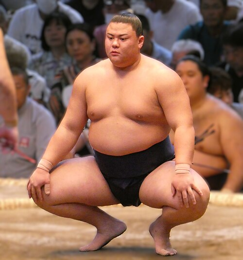
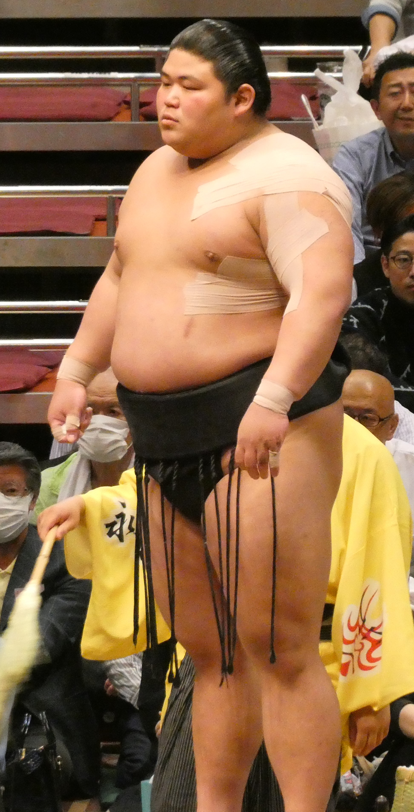
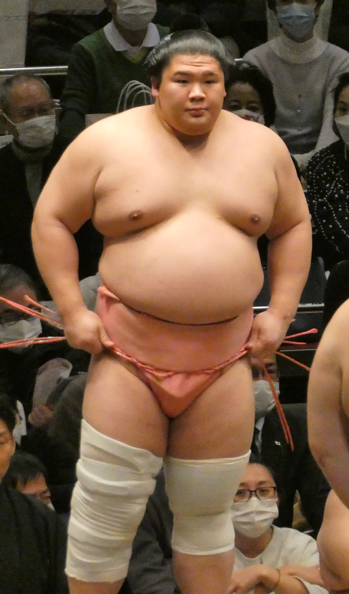

What is the rank of Komusubi?
The komusubi rank is the fourth highest rank in sumo, and is the lowest of the san'yaku, the title holder ranks. A wrestler can get promoted to this rank by simply getting kachi-koshi, a winning record, given that there is a spot for him; each banzuke, or rankings chart, must have at least two komusubi, and only in rare circumstances is a wrestler promoted to komusubi when the two slots are already filled. Similarly, a wrestler can get demoted from komusubi by getting a make-koshi, a losing record, and fall out of the san'yaku in back into the maegashira ranks (the lower and mid ranks of the makuuchi division). Komusubi, along with the next highest rank of sekiwake, are often considered the "junior" san'yaku ranks as they lack the strict promotion criteria that the ranks of ozeki and yokozuna have.

